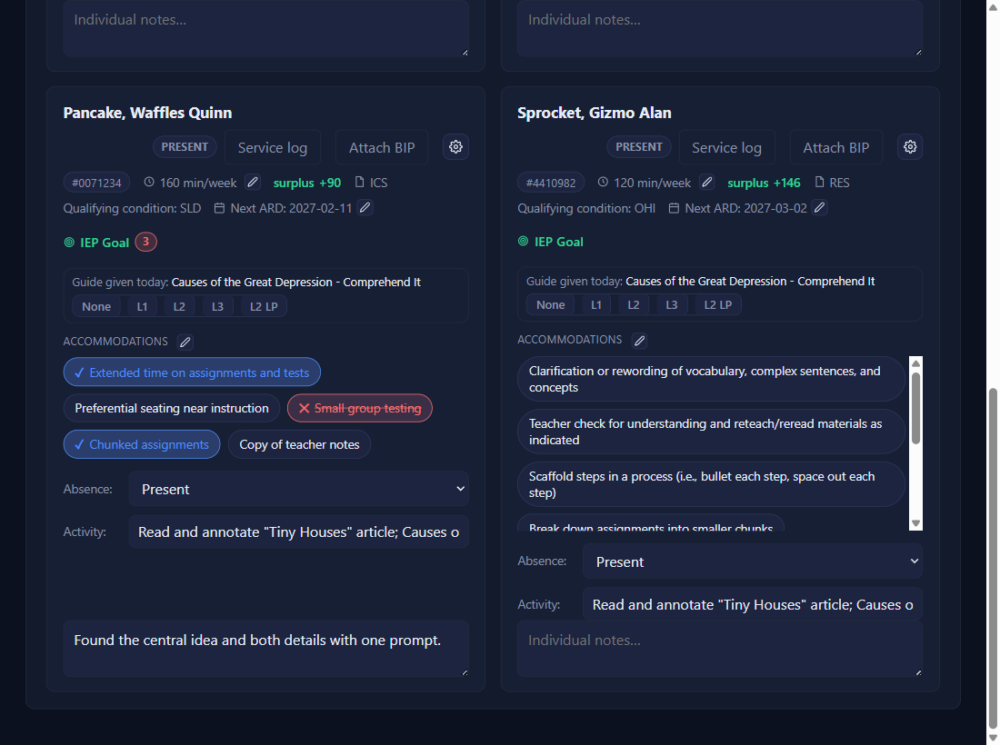
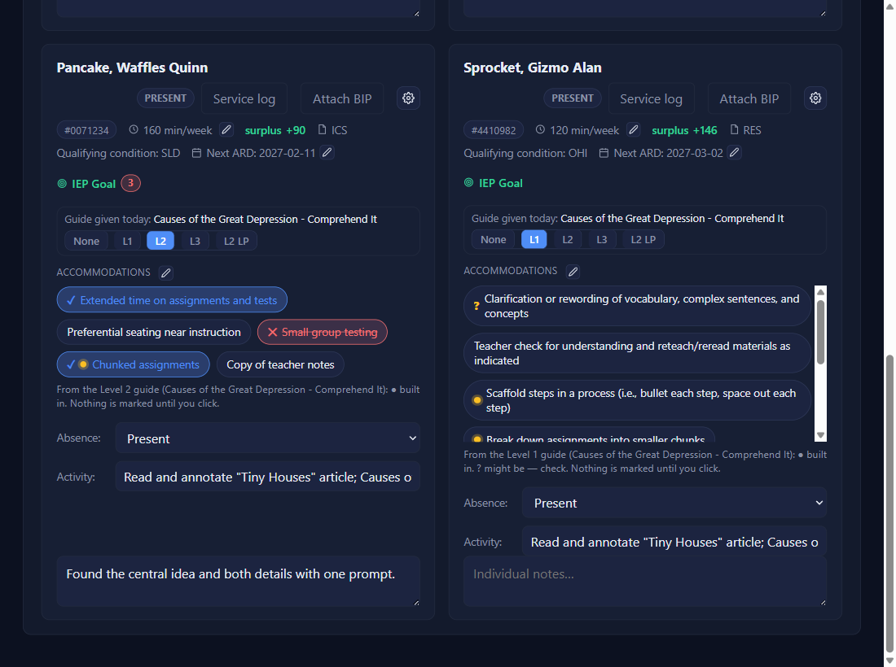
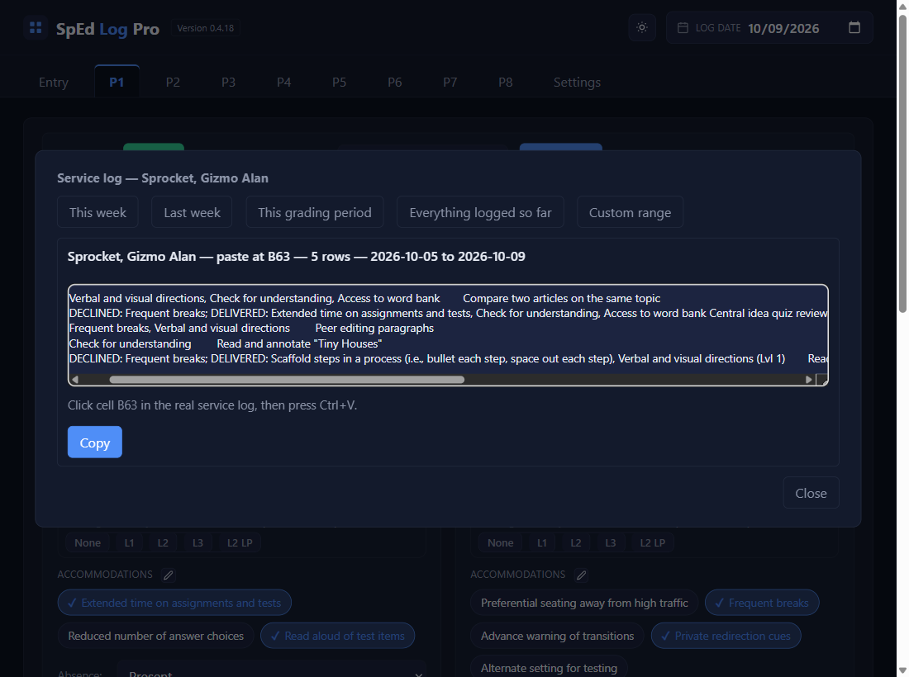

Leveled guides: log the day
Pick the activity with Lesson activity…
Every present student's card gets a Guide given today row for that lesson: None · L1 · L2 · L3 · L2 LP, with nothing selected. Two activities from the same lesson share one row. Absent and coded students get no row.

Tap the level you handed each student
The chips that level's guide covers get a gold dot ● (built in) or a gold ? (might be: look before you click). A line under the chips names the guide.

Click the chips you delivered, then Save
A dot never marks a chip. Click each one you delivered, exactly as always, then click Save. Changing only a level makes the button read Unsaved changes. Saved before tapping a level? The row stays: tap it and Save again. Nothing carries to the next day: every row starts blank.
Column D shows the level
In the service log, that day's Accom / Mods ends with the level: … Verbal and visual directions (Lvl 1). With no chip marked it reads (Lvl 1) by itself, so the log still shows a guide was given.

✓ You'll know it worked
- Dots appear as soon as you tap a level.
- Column D ends with
(Lvl 1),(Lvl 3, Lvl 2)for two lessons, or(Lvl 2 LP)for large print.
✕ Avoid these
- Trusting the dot. It is a reminder, not a mark. Click the chips you really delivered.
- Typing the activity. The row only comes from Lesson activity…, from a lesson with its Guide Supports file.
⚠ If you see this
Whole-class code is on, so there's nothing to log.That period has a whole-class code today. Switch it off first to log the day.
No Guide given today row after pickingThat lesson was imported without its Guide Supports file. Import it again with the file beside it (lesson: Leveled guides: set up).
A dot on the wrong chipSettings → Leveled guide supports → Fix a wording.